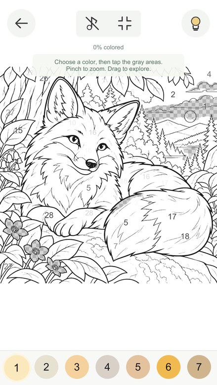

A little color.
A little calm.
Put the busy world on pause.
Find your quiet in beautiful pictures,
one color at a time.
Find your kind of calm.
Cozy places, woodland friends and a little magic.
Take a peek at our first five pictures.
Finished artwork previews from our current beta collection.

A few taps.
A softer kind of day.
You don’t need to be an artist.
Just bring a little curiosity.
- 01
Find a picture you love.
Choose a cozy place, a woodland friend or something a little magical.
- 02
Follow the numbers.
Pick a color and tap its gray areas. Zoom in to enjoy the little details.
- 03
Watch it come to life.
Every tap reveals a little more. Take a break whenever you like—we’ll save your place.
Meet Tom & Jerry.
A real dog. A real cat. And a whole lot of personality.
Our little companions inspired the face of Ethel’s Colors.
You’ll find them in our first collection, too.
Your next little
escape is coming.
We’re getting Ethel’s Colors ready for iPhone and iPad.
Android will follow. For now, enjoy a peek—and say hello.